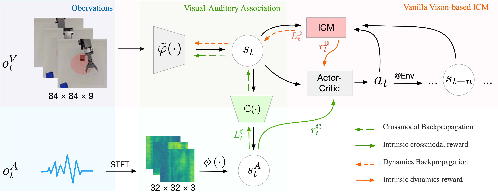

@article{zhao2022impact,
title={Impact Makes a Sound and Sound Makes an Impact: Sound Guides Representations and Explorations},
author={Zhao, Xufeng and Weber, Cornelius and Hafez, Muhammad Burhan and Wermter, Stefan},
journal={arXiv preprint arXiv:2208.02680},
year={2022}
}